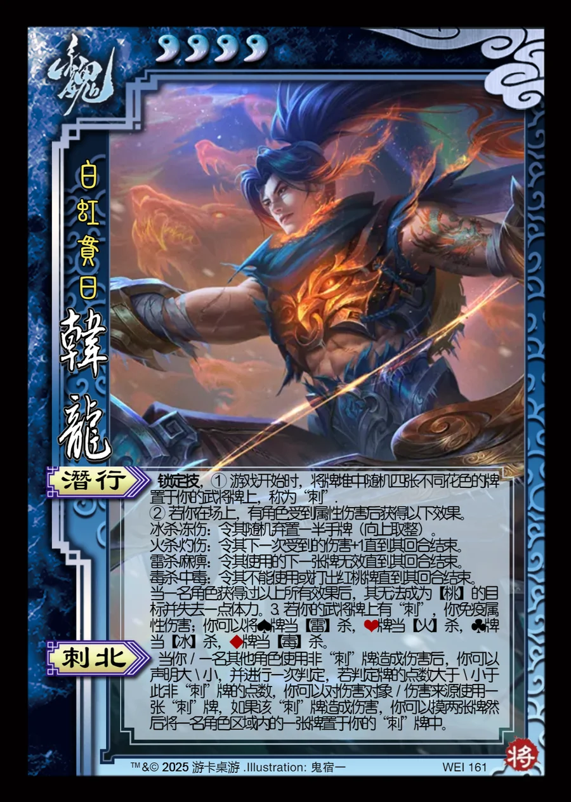

点击卡面查看大图
魏
韩龙
♥4白虹贯日
潜行锁定技
锁定技，① 游戏开始时，将牌堆中随机四张不同花色的牌置于你的武将牌上，称为“刺”.
② 若你在场上，有角色受到属性伤害后获得以下效果。
冰杀-冻伤：令其随机弃置一半手牌（向上取整）。
火杀-灼伤：令其下一次受到的伤害+1直到其回合结束。
雷杀-麻痹：令其使用的下一张牌无效直到其回合结束。
毒杀-中毒：令其不能使用或打出红桃牌直到其回合结束。
当一名角色获得过以上所有效果后，其无法成为【桃】的目标并失去一点体力。3. 若你的武将牌上有“刺”，你免疫属性伤害；你可以将♠️牌当【雷】杀，♥️牌当【火】杀，♣️牌当【冰】杀，♦️牌当【毒】杀。
刺北
当你 / 一名其他角色使用非“刺”牌造成伤害后，你可以声明大 \ 小，并进行一次判定，若判定牌的点数大于 \ 小于此非“刺”牌的点数，你可以对伤害对象 / 伤害来源使用一张“刺”牌，如果该“刺”牌造成伤害，你可以摸两张牌然后将一名角色区域内的一张牌置于你的“刺”牌中。